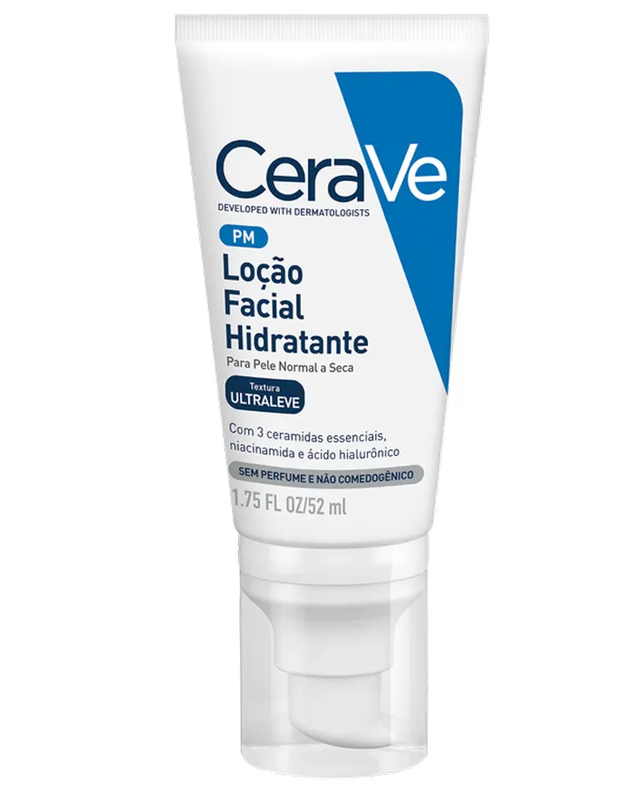
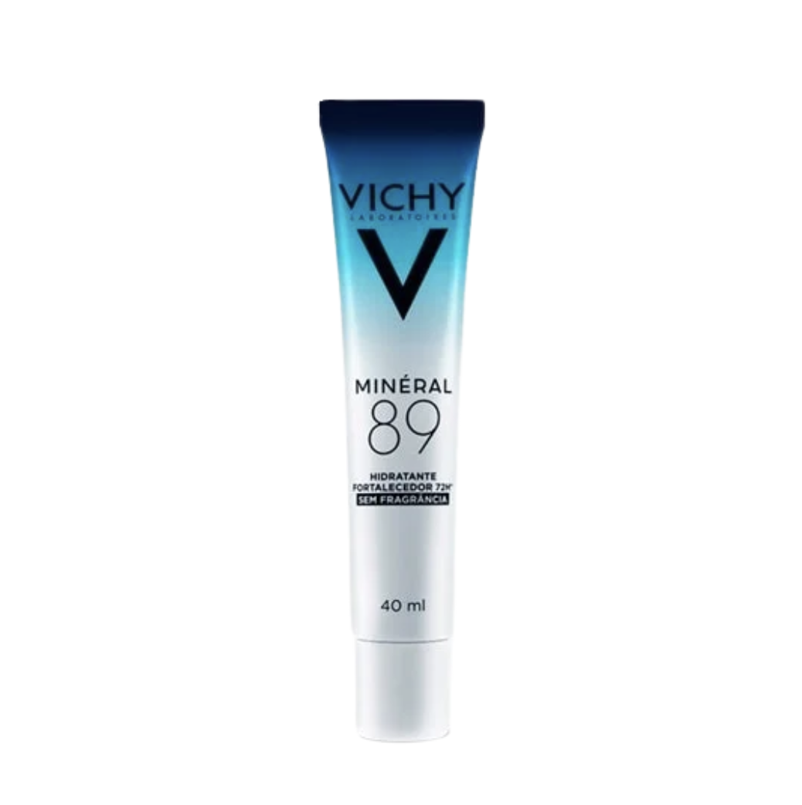
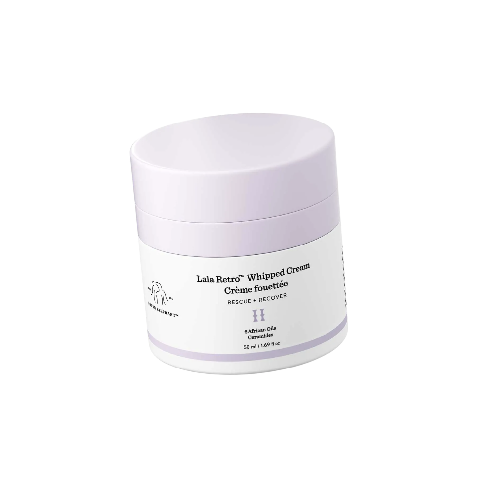
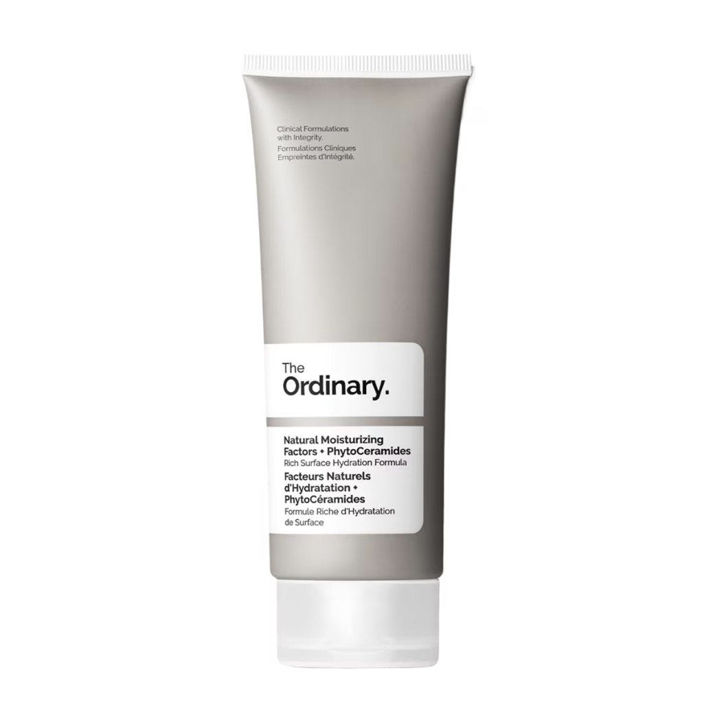

CeraVe
Loção Facial Hidratante
Loção facial hidratante para a rotina diária.
3 ceramidas essenciais · Niacinamida · Ácido hialurônico
Fórmulas para acompanhar a pele com conforto, reposição de ativos e diferentes texturas de cuidado.

Loção facial hidratante para a rotina diária.

Creme hidratante fortalecedor para complementar o cuidado diário.

Creme de textura rica e envolvente para nutrir a pele.

Hidratante de textura cremosa para reforçar o conforto e a nutrição da pele.
Das loções leves aos cremes mais ricos, a escolha do hidratante pode acompanhar o momento da rotina e a necessidade de conforto da pele.